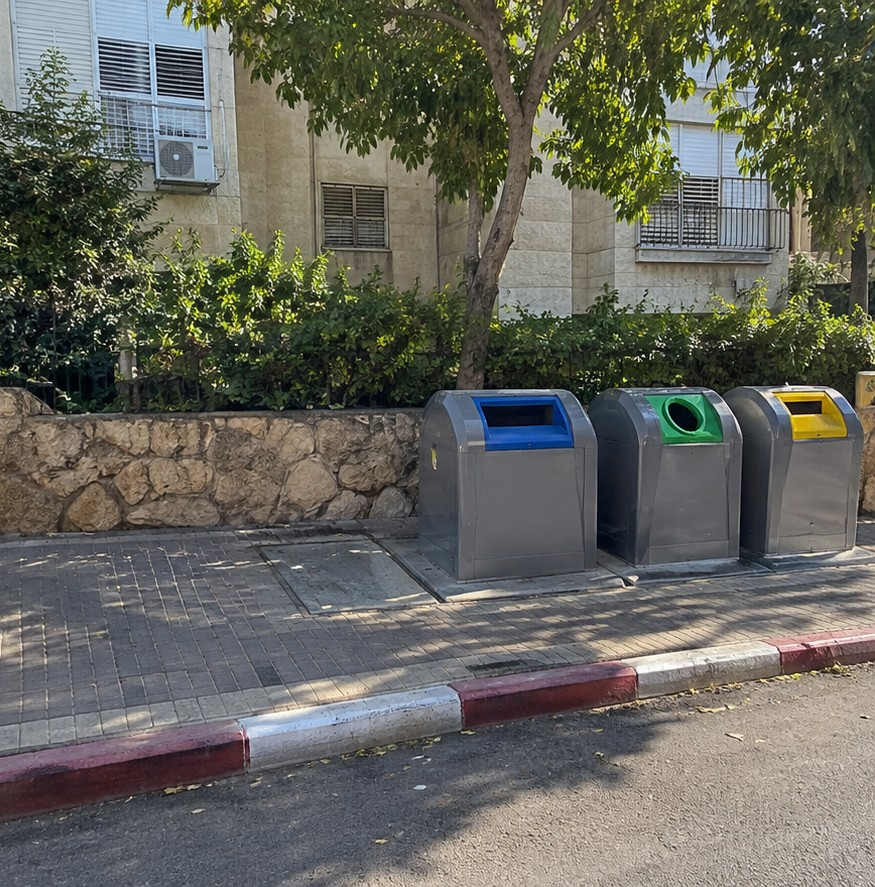

תושבי רמת הדר – הקהילה השכונתית
לפני 4 שעות · ציבורי
תושבת השכונה
שלום, ליד מתקן המחזור ברחוב הגפן 12 יש כבר יומיים ערימה של קרטונים ושקיות אשפה. זה חוסם חלק מהמדרכה ונראה מוזנח. אפשר לטפל בזה?
31
4 תגובות2 שיתופים
יעל לוי · נציגת העירייהעיריית רמת הדר
שלום, תודה על הדיווח. הפנייה הועברה לצוות התברואה העירוני לטיפול, ונעדכן כאן לאחר הפינוי.
לפני

אחרייעל לוי · נציגת העירייה
עדכון: המפגע פונה והאזור נוקה. תודה על הדיווח ועל הסבלנות.
תושבת השכונה
תודה רבה על הטיפול המהיר והקשוב! כיף לדעת שיש מי שמקשיב ודואג לתושבים.